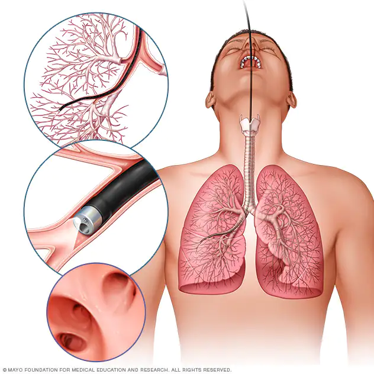

What is a gastroscopy?
- Bronchoscopy is a procedure that lets doctors
look at your lungs and air passages.
It's usually performed by a doctor who specializes in lung disorders (a pulmonologist).
- Common reasons for needing bronchoscopy are a persistent cough,
infection or something unusual seen on a chest X-ray or other tes
Getting ready for the procedure
- You will not be able to eat or drink anything after midnight the night
before the bronchoscopy. However, your doctor may allow you to take some of your medications.
Please be sure to ask your physician how to handle your daily medications prior to the procedure.
The procedure

- Bronchoscopy is usually done in a procedure room in a clinic or in a hospital operating room.
The entire procedure, including prep and recovery time, typically takes about four hours.
Bronchoscopy itself usually lasts about 30 to 60 minutes.
- During bronchoscopy, the bronchoscope is placed in your nose or mouth.
The bronchoscope has a light and a very small camera
at its tip that displays pictures on a monitor to help guide your doctor in performing the procedure.
- The bronchoscope is advanced slowly down the back of your throat, through the vocal cords and into the airways.
It may feel uncomfortable, but it shouldn't hurt.
Your health care team will try to make you as comfortable as possible.
- Samples of tissue and fluid may be taken and procedures may be performed using devices passed through the bronchoscope.
Your doctor may ask if you have pain in your chest,
back or shoulders. In general, you shouldn't feel pain.
After the procedure
- You'll be monitored for several hours after bronchoscopy.
Your mouth and throat will probably be numb for a couple of hours.
You won't be allowed to eat or drink until the numbness wears off.
This helps keep food and liquids from entering your airways and lungs.
- When your mouth and throat are no longer numb,
and you're able to swallow and cough normally again,
you can have something to drink. Start with sips of water.
Then you may eat soft foods, such as soup and applesauce.
Add other foods as you feel comfortable.
- You may have a mild sore throat, hoarseness, a cough or muscle aches.
This is normal. Warm water gargles and throat lozenges can help lessen the discomfort.
Just be sure all the numbness is gone before you try gargling or sucking on lozenges.
Return